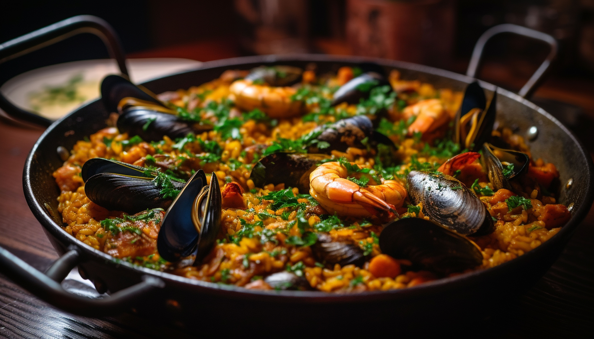
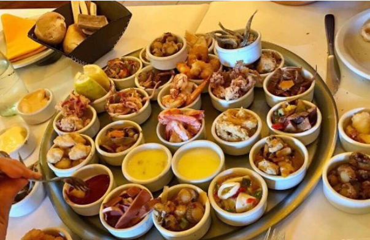

Paella
Paella de mariscos
Arroz de grano corto cocido con mejillones, almejas, gambas y calamares en un sofrito de cebolla, ajo, pimientos rojos y tomate, sazonado con azafrán y caldo de pescado, presentado con toques de limón opcional

Parrillada
Parrillada de mariscos
Langostinos, calamares y mejillones asados , acompañada de una selección de salsas que realzan la experiencia.

Langostinos
Langostinos al ajillo
Langostinos frescos salteados en ajo dorado, resaltado con hierbas aromáticas con un toque de picante y mucho sabor.

Picada
Picada de mariscos
Combinacion de langostinos, calamares y mejillones frescos, acompañada de salsas que realzan su sabor.

Rabas
Rabas fritas
Calamar fresco y crujiente, con un toque justo de sazón. Acompañadas de una salsa especial, son la elección perfecta para los amantes de los sabores marinos.